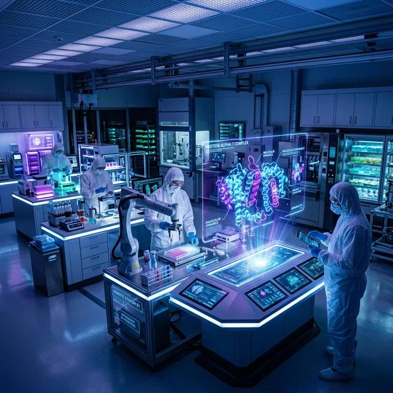
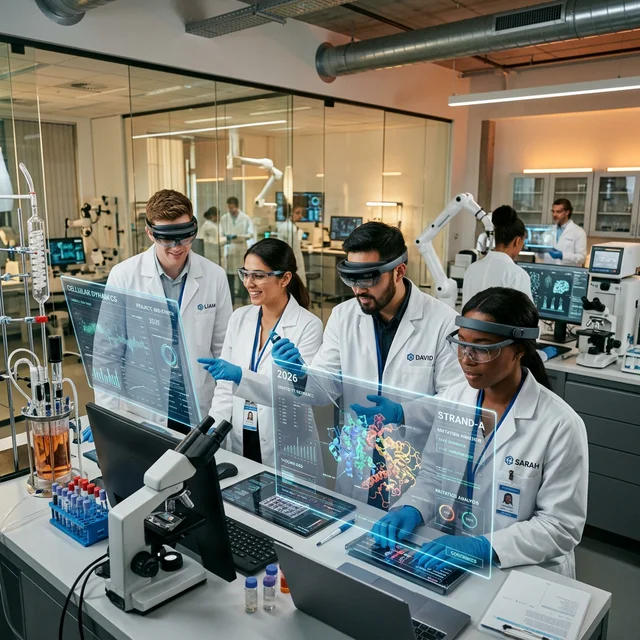

Our 380-strong research team publishes over 100 peer-reviewed papers annually, collaborating with MIT, Johns Hopkins, and IIT Madras on next-generation biological platforms.
Global Patents
Bio-Processor
Global Lab Network
R&D Investment

Simulating protein folding at the atomic level using 127-qubit processors to fast-track drug discovery.
Programming synthetic organisms with adaptive genetic circuits that respond to environmental stressors.
Bio-engineered mesh interfaces that integrate with human brain tissue to restore lost neuro-function.
Deploying programmable nano-bots for non-invasive cellular repair and targeted oncology treatment.
Scaling 3D bioprinting technology to create fully functional, patient-matched vascularized organs.
Developing biological life-support systems and radiation-resistant crops for deep space colonization.
A selection of our latest contributions to global scientific literature.

We believe the most complex biological challenges can only be solved through collective intelligence. Our Open Innovation portal allows academic researchers and biotech startups to leverage our high-throughput infrastructure.